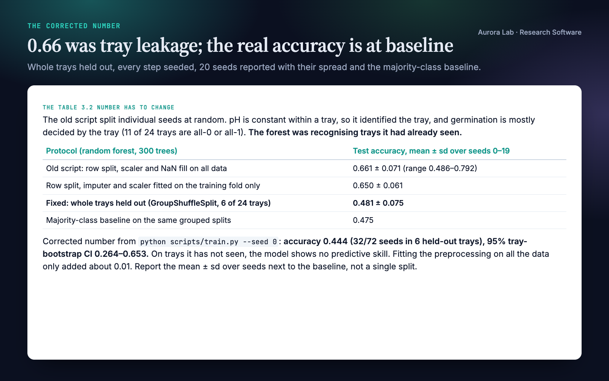
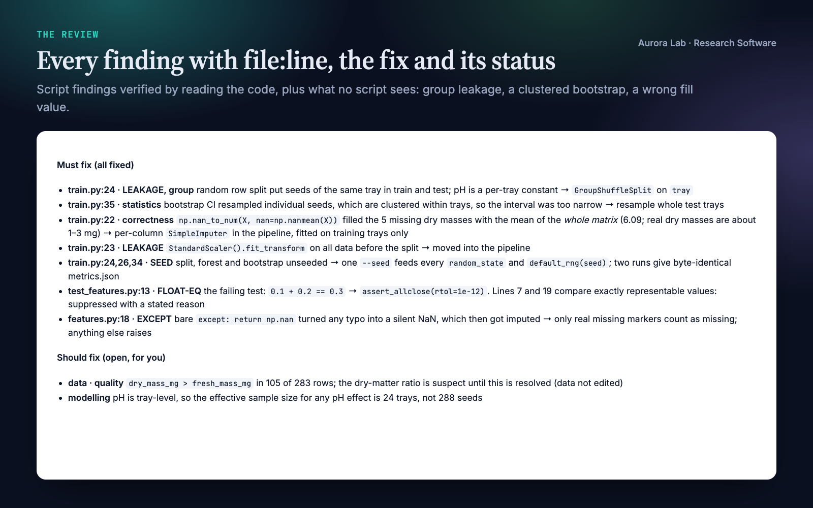
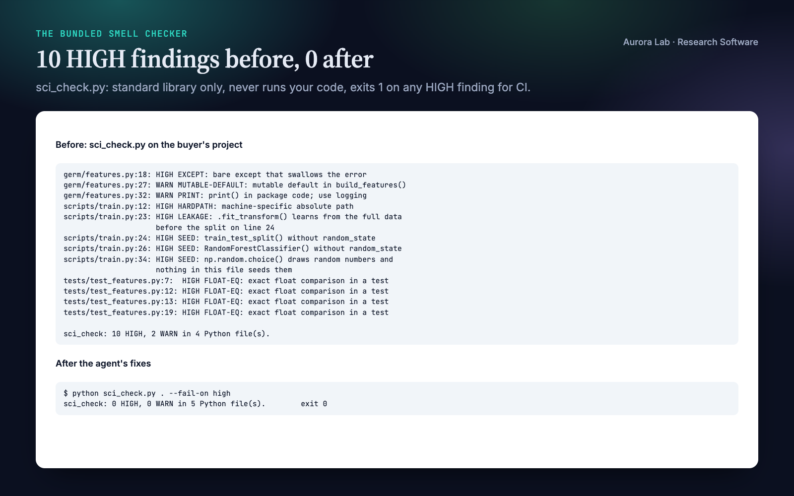
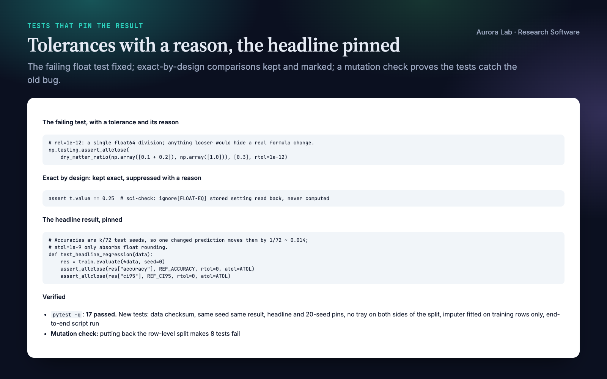
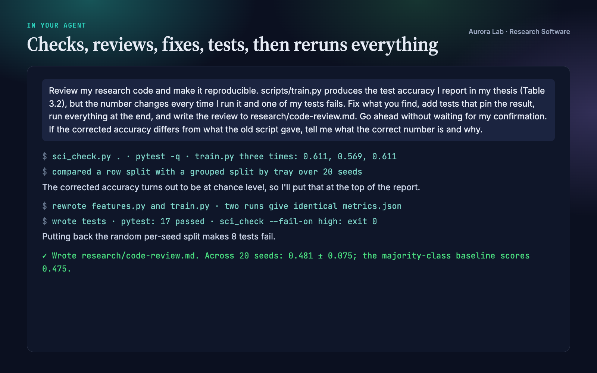

Overview
Research code is a deliverable, and it fails in ways a generic code review does not look for: preprocessing fitted before the train/test split, random draws nobody seeded, tests that compare floats with ==, an except: that turns a failure into a silent NaN, a number in the paper that no script can regenerate. Research Software makes your agent review and fix the code behind your results, then prove the fixes:
- A deterministic smell check first. The bundled
sci_check.pyparses your Python, never runs it, and reportsfile:linefindings. Each one is a lead the agent verifies by reading the code. - A review that goes past the script. A checklist that puts science-specific failures first: group, temporal and target leakage, broadcasting, dtype and units, non-determinism, silent fallbacks, numerical stability. Then a general engineering pass.
- Fixes, then tests that pin the result. Seeds threaded through every random step, preprocessing moved inside the training fold, tolerances chosen from the metric's scale with the reason written next to them, regression tests on the headline number and seed-stability tests.
- Run it, don't trust it. Tests and the main script run end to end; two runs with the same seed must agree, and the spread across seeds is reported.
- A review you can act on. On request,
research/code-review.md: must-fix and should-fix items withfile:line, the fix and its status, what was verified with which command, and what was not checked.
Pairs well with: Citable Python Packages (free), which turns the corrected code into an installable, citable package, and Instructions Writer, for a README and setup guide a newcomer can follow. Neither is needed.
Quick start
- Get the skill from Agensi and add it to your agent (Claude Code, Codex CLI, Cursor, Gemini CLI or any agent that loads SKILL.md skills).
- Open your agent in the project, with the project's own environment available so the agent can run your tests and scripts.
- Python 3.10+ for the smell checker (standard library only, nothing to install).
- Ask in plain words.
Example requests:
- "Review my research code and make it reproducible."
- "My accuracy changes every run. Make it reproducible."
- "Check this training script for data leakage."
- "Write regression tests that pin the results in Table 2."
- "Is this repository ready to release with the paper?"
What you get
Everything below comes from one real run: a fresh agent session with only this skill installed, given the request shown ($0.91, 286 s). The project was ours: a synthetic, seeded seed-germination study (germ, 288 seeds in 24 trays, a random forest predicting germination), written the way thesis code often is. We planted a scaler fitted before the split, an unseeded split, forest and bootstrap, a hard-coded home-folder path, a bare except returning NaN, missing values filled with one global mean, an exact float test that fails, two exact comparisons that are correct by design, and a tray-level feature with a random row split (group leakage, which no static check can see).
The agent found every planted problem, and three we had not planned: the bootstrap interval resampled clustered seeds, the README's command failed because the package could not be imported from a script, and in our synthetic data dry mass exceeds fresh mass in 105 of 283 rows (a mistake in our generator, which it flagged without editing the data). It fixed the code, kept the two exact-by-design comparisons and marked them with a reason, wrote tests (17 pass), confirmed that putting the old split back makes 8 of them fail, and reported the corrected number at the top: the old script's 0.66 accuracy was tray leakage, and with whole trays held out the model scores 0.48 ± 0.08, the same as the majority-class baseline.





How it works
- Scope it. Library code or experiment scripts, and what you want: a review, tests, reproducibility, a leakage check, release readiness. The agent reads the code and README before changing anything.
- Pre-check.
sci_check.pyon the project. Findings are leads, not verdicts; a clean run proves nothing about logic. - Review against the checklist. Science-specific failures first, then the general pass. A leakage taxonomy covers preprocessing, resampling, duplicates, groups, time, target leakage, tuning on the test set and selective reporting. Where your environment can run a separate reviewer, the checklist and diff can go to it as a second opinion.
- Fix and add tests. Regression pins with justified tolerances, property tests for invariants, seed-stability tests; numerical stability and performance fixes backed by a measurement.
- Run it end to end. The test suite and the main script on a small input. For code that will be released or cited, the release gates: fresh-environment install, CI, pinned environment, archived version.
- Report. Findings by severity with
file:line, what was fixed, what is still open and what was not checked.
Files it reads and writes
| Path | |
|---|---|
| Reads | your code, tests, packaging files and README; research/results/*.json only when asked, to check that each result names a source script that exists |
| Writes | code and tests only when you ask for fixes; research/code-review.md only when you ask for a written review |
| Runs | the smell checker (static), your test suite and your scripts, inside your project's environment |
| Never | rewrites results, figures, manuscript files or data; installs anything globally; uses the network; writes outside the project (except throwaway scratch files in the system temp directory) |
The smell checker
python sci_check.py . # report
python sci_check.py . --fail-on high # exit 1 on any HIGH (CI)
python sci_check.py . --results # check result provenance
python sci_check.py . --ignore TODO,PRINT
The script ships in the skill's scripts/ folder. Python 3.10+, standard library only. Static: every .py file is parsed, never imported or run. No network, no writes. Output is one line per finding, path:line: SEVERITY CODE: message.
| Code | Severity | Flags |
|---|---|---|
| SEED | HIGH | random draws in a file that never seeds that generator; RNGs created without a seed; randomised scikit-learn estimators and splitters without random_state |
| FLOAT-EQ | HIGH | in tests: == or != on float-valued expressions, assertEqual or assert_array_equal on floats |
| LEAKAGE | HIGH | a scaler, imputer, selector, PCA or resampler fitted before the split in the same function; data normalised with its own statistics before the split; anything fitted on test data |
| HARDPATH | HIGH | machine-specific absolute paths in string literals |
| EXCEPT | HIGH or WARN | HIGH: a bare except: or except Exception: that swallows the error (only pass, continue, a bare return, or returning or assigning a default such as None or NaN). WARN: a bare except: that still logs, re-raises or handles the error |
| NO-TESTS | HIGH | a package with no test files |
| PROVENANCE | HIGH | with --results: a result with no source script, or one that does not exist |
| Hygiene | WARN | mutable default arguments, print in library code, TODO comments, no packaging metadata, unparsable files |
Silencing a reviewed finding. End the line with # sci-check: ignore[CODE] (or # sci-check: ignore for all codes), ideally with a short reason. The usual case is FLOAT-EQ on a value that is exact by design, such as a stored setting read back: assert t.value == 0.25 # sci-check: ignore[FLOAT-EQ] stored setting read back, never computed.
FAQ
What does it check automatically?
The smell checker flags the codes in the table above, with file and line. Everything else, including group and temporal leakage, units, broadcasting and numerical stability, is a review the agent performs by reading the code against the bundled checklist.
Will it change my results?
It changes code, not result files, and only when you ask for fixes. If a fix moves a number, it tells you the old and new values and why. In the demo the reported accuracy fell from about 0.66 to 0.48, the majority-class baseline, and the agent put that at the top of its report.
How strict is it about bare except?
An except block that swallows the error (its body only passes, continues, breaks, returns nothing, or returns or assigns a default such as None or NaN) is HIGH, because failures, and Ctrl-C, silently disappear. A bare except: that still logs, re-raises or computes a real fallback is a WARN: it should name the exception, but it does not hide the failure. except Exception: is flagged only when it swallows.
What about float comparisons that are exact on purpose?
The checker sees the shape of a comparison, not where the value came from, so a stored setting read back is flagged too. Check that nothing on either side is computed, then add # sci-check: ignore[FLOAT-EQ] with a short reason. In the demo the agent did this for two such lines and fixed the one comparison that needed a tolerance.
Does it work with notebooks, R or Julia?
The doctrine and checklist apply to any language, and the agent reviews whatever code you give it. The smell checker reads Python .py files only; export notebooks first (for example with jupyter nbconvert --to script).
Can I use the checker in CI?
Yes: --fail-on high exits 1 on any HIGH finding, --fail-on warn on any finding. The bundled reference includes a pre-commit hook snippet.
Does it need my data?
It runs your scripts inside your project, so it reads what they read. Nothing is uploaded: the skill uses no network. The workflow runs your main script on a small input.
Limitations
- The smell checker is a static heuristic for Python. It cannot see a seed set in another module, semantic leakage (duplicates across splits, group or temporal leakage, target leakage, tuning on the test set), wrong units, broadcasting or dtype errors or wrong maths, and it does not read notebooks.
- It flags float comparisons that are exact by design; check each one and silence it inline.
- A clean run proves nothing about logic. The agent's review covers what the script cannot, but it is a careful reading, not a proof of correctness.
- Regression pins hold for the library versions they were recorded with. A fresh-environment install is a separate step the agent recommends.
- It does not scaffold packages, write up results, edit your manuscript or change your data.
Changelog
1.0.0 · October 2026 · First release: scientific-programming review doctrine and checklists, and the sci_check.py smell checker (swallowed errors HIGH, a handled bare except WARN, inline suppression).